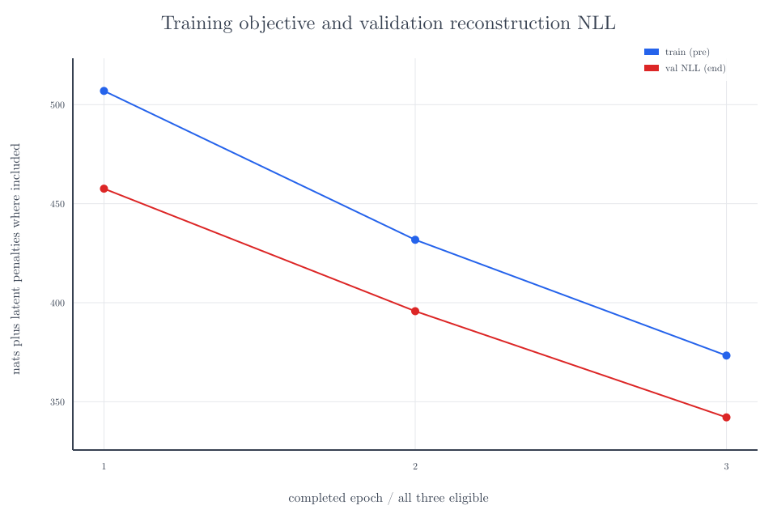
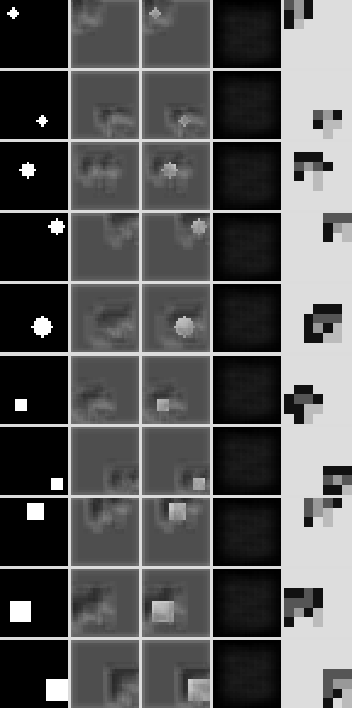
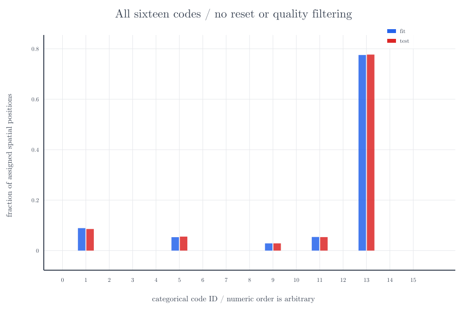
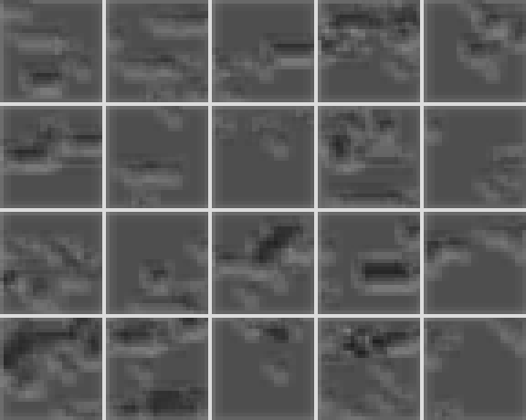

Vector-Quantized Autoencoder: Discrete Codes and Separate Gradient Routes
Abstract
An image code can be a sequence of dictionary symbols rather than a continuous Gaussian sample. Learning those symbols requires deciding how gradients cross nearest-neighbour selection and how a decoder generates without a target. This report fits a compact spatial VQ-VAE on 210 local circle/square images, with 42 validation and 42 test cases. All 21 Adam updates remain editable C++. Validation reconstruction NLL selects epoch 3; test pixel MSE 0.126616 is worse than the fitting-only mean's 0.048548. Five of sixteen codes are used. Unfiltered reconstructions and twenty prior decodes retain the short run's failures.
Snap encoder vectors to a learned dictionary
[Van den Oord, Vinyals and Kavukcuoglu (2017)](https://arxiv.org/abs/1711.00937) introduce a discrete bottleneck with a straight-through reconstruction gradient and separate dictionary and commitment penalties. Here the encoder produces a 7×7 lattice of four-vectors. Each vector chooses one of sixteen learned entries; forty-nine IDs completely specify the decoder input. The same lookup and decoder also accept independently generated ID grids. No image or continuous encoder feature bypasses the discrete bottleneck.
#include <dm/dm.hpp>
int main() {
std::filesystem::create_directories("build");
dm::graphics::Diagram d(51, 1100);
dm::graphics::DiagramNodeStyle st;
st.width = 5.6;
st.height = 2.8;
st.font_size = 20;
d.node("x", {0, 0}, "Binary image\n28 x 28 x 1", st)
.node("e", {7, 0}, "Encoder / Conv-ReLU-avg\n8 then 4 channels", st)
.node("z", {14, 0}, "Encoder vectors\n7 x 7 x 4", st)
.node("q", {21, 0}, "Nearest learned entry\nDictionary16 x 4", st)
.node("i", {28, 0}, "49 discrete IDs\nEach in0..15", st)
.node("g", {35, 0}, "Lookup / shared decoder\nBernoulli probabilities", st)
.node("prior", {21, 6}, "Fit-code Markov prior\nExplicit uniform bank", st)
.node("pi", {28, 6}, "Independent ID grid\nNo image input", st)
.edge("x", "e")
.edge("e", "z")
.edge("z", "q")
.edge("q", "i")
.edge("i", "g")
.edge("prior", "pi")
.edge("pi", "g")
.text(
{17, -6},
"Reconstruction: identity SURROGATE to encoder, no dictionary gradient.\nDictionary "
"penalty moves entries; commitment penalty moves encoder.\nThe prior is fitted "
"separately on FIT codes after checkpoint selection.",
20)
.save_svg("build/vq_vae_method.svg");
}
For encoded vectors e_i and book entries b_k, select k_i=argmin_k ||e_i-b_k||² and q_i=b_k_i. Ties select the lowest code index. Let stop preserve values while stopping all derivatives. The source-preserving surrogate is
The reconstruction gradient through s is identity to e and absent to book. Dictionary D moves only book, while commitment C moves only encoder. This surrogate is not the derivative of the piecewise-constant nearest assignment. Finite differences of the entire hard forward therefore cannot validate it; analytic route checks can. The expression avoids cancellation against a large encoder value, although signed zero can normalize. Available continuous higher paths follow the surrogate. This teaching model uses gradient dictionary updates, no EMA, code reset, Gaussian KL or learned neural prior. The chosen reduction over all latent elements fixes the effective relative weights; it must not silently become a latent sum.
Dense distance work is O(NKD), where N=B×49, K=16 and D=4. One-hot lookup has the same order and stores N×K assignments. The spatial convolutions cost O(BHW×9C(D+1)), C=8. The caller owns batch order, optimizer state, checkpoint selection and prior uniforms.
A nearest tie and three gradient routes small enough to inspect
Vectors (-0.5,0) and (0.9,0.2) choose dictionary entries (-1,0) and (1,0), respectively. The first vector ties entries 0 and 1, so ID 0 wins. The following code prints reconstruction, dictionary and quarter-weighted commitment derivatives for every coordinate. The connecting segments show chosen neighbours, not differentiable paths through argmin.
#include <dm/dm.hpp>
int main() {
namespace n = dm::nn;
auto e = n::tensor({-.5, 0., .9, .2}, {2, 2}, n::DType::Float64).requires_grad_(),
b = n::tensor({-1., 0., 0., 0., 1., 0.}, {3, 2}, n::DType::Float64).requires_grad_();
const auto q = n::models::VectorQuantize(e, b, 3, 2);
const auto recon = n::grad(.5 * n::sum(n::square(q.straight_through)) + 0 * n::sum(b), {e, b});
const auto dictionary = n::grad(q.codebook_loss + 0 * n::sum(e), {e, b}),
commit = n::grad(.25 * q.commitment_loss + 0 * n::sum(b), {e, b});
if (q.indices.to_vector<int>() != std::vector<int>{0, 2} ||
!n::equal_bits(q.quantized, q.straight_through))
return 1;
std::print(
"| group | coordinate | reconstruction | dictionary | quarter commitment "
"|\n|---|---:|---:|---:|---:|\n");
for (int group = 0; group < 2; ++group) {
const auto r = recon[group].to_vector<double>(), d = dictionary[group].to_vector<double>(),
c = commit[group].to_vector<double>();
for (std::size_t j = 0; j < r.size(); ++j)
std::print(
"| {} | {} | {:.6f} | {:.6f} | {:.6f} |\n",
group == 0 ? "encoder" : "book",
j,
r[j],
d[j],
c[j]);
}
auto chart = dm::graphics::RPlot::create();
chart.lines({-.5, -1}, {0, 0}, "chosen neighbour", dm::RGBA{100, 116, 139}, 2)
.lines({.9, 1}, {.2, 0}, "", dm::RGBA{100, 116, 139}, 2)
.points({-1, 0, 1}, {0, 0, 0}, "dictionary", dm::RGBA{220, 38, 38}, 6)
.points({-.5, .9}, {0, .2}, "encoder", dm::RGBA{37, 99, 235}, 5)
.x_limits(-1.3, 1.7)
.y_limits(-.15, .45)
.title("Nearest dictionary vectors / lowest-index ties")
.x_label("embedding coordinate 1")
.y_label("embedding coordinate 2")
.save_svg("build/vq_vae_neighbours.svg");
}| group | coordinate | reconstruction | dictionary | quarter commitment |
|---|---|---|---|---|
| encoder | 0 | -1.000000 | 0.000000 | 0.062500 |
| encoder | 1 | 0.000000 | 0.000000 | 0.000000 |
| encoder | 2 | 1.000000 | 0.000000 | -0.012500 |
| encoder | 3 | 0.000000 | 0.000000 | 0.025000 |
| book | 0 | 0.000000 | -0.250000 | 0.000000 |
| book | 1 | 0.000000 | 0.000000 | 0.000000 |
| book | 2 | 0.000000 | 0.000000 | 0.000000 |
| book | 3 | 0.000000 | 0.000000 | 0.000000 |
| book | 4 | 0.000000 | 0.050000 | 0.000000 |
| book | 5 | 0.000000 | -0.100000 | 0.000000 |

Native data and the complete fitting program
Offline beta-vae-assets preparation produces all 294 binary 28×28 circle/square images: 2 shapes×3 sizes×7 x-positions×7 y-positions. Radius=size+2 and centre=(3x+5,3y+5), with inclusive Euclidean boundaries for circles and inclusive Chebyshev boundaries for squares. Residue (x+2y+size+3shape) mod 7 assigns test=0, validation=1 and fit=2–6, giving disjoint 210/42/42 factor combinations. These small procedural images are not a downloaded benchmark. Factor labels never enter the model, optimizer or checkpoint criterion.
#include <dm/dm.hpp>
int main() {
namespace n = dm::nn;
const auto cache = dm::datasets::prepare_example_data("beta-vae-assets");
const auto a = n::load_npz((std::filesystem::path(cache) / "beta_vae/factors.npz").string());
auto find = [&](const std::string& name) {
for (const auto& [key, value] : a)
if (key == name)
return value;
throw std::runtime_error(name);
};
std::print("| pool | images | geometry | factor columns |\n|---|---:|---|---:|\n");
for (const std::string split : {"fit", "validation", "test"})
std::print(
"| {} | {} | 28x28x1 | {} |\n",
split,
find(split + "_images").size(0),
find(split + "_factors").size(1));
}| pool | images | geometry | factor columns |
|---|---|---|---|
| fit | 210 | 28x28x1 | 4 |
| validation | 42 | 28x28x1 | 4 |
| test | 42 | 28x28x1 | 4 |
Seed 2707 creates nine leaves and 805 scalars: encoder1 80, encoder2 292, dictionary64, decoder1 296 and output73. BatchOrder(210,32,2711) gives seven batches per epoch, including an 18-image final batch. Three epochs make *21 Adam steps*, rate 0.003, moments 0.9/0.999, epsilon 1e-8. There is no stochastic posterior bank. The selected network is deterministic.
All completed epochs 1–3 are eligible. Validation reconstruction NLL selects the checkpoint; it excludes dictionary and commitment penalties. A fresh model restores all nine leaves. Only after selection does a smoothed raster prior fit the *fitting* ID grids. Model restore is distinct from optimizer-state resume. The adapters below package data, checkpoints and endpoint records; the actual forward, loss, reverse mode and update are visible in the loop.
#include <dm/dm.hpp>
namespace nn = dm::nn;
namespace ae {
void Require(bool ok, const std::string& why) {
if (!ok)
throw std::runtime_error(why);
}
void Near(double a, double b, double tol, const std::string& why) {
Require(std::abs(a - b) <= tol, why);
}
nn::Tensor Find(const nn::NamedTensors& a, const std::string& name) {
for (const auto& [key, value] : a)
if (key == name)
return value;
throw std::runtime_error(name);
}
struct BetaFactorData {
nn::Tensor images, factors, source;
};
std::vector<BetaFactorData> LoadBetaFactors(const std::filesystem::path& root) {
const auto arrays = nn::load_npz((root / "factors.npz").string()),
known = nn::models::KnownFactorLattice();
std::vector<BetaFactorData> result;
std::set<int> seen;
for (const std::string split : {"fit", "validation", "test"}) {
const int n = split == "fit" ? 210 : 42;
const auto raw = Find(arrays, split + "_images"), f = Find(arrays, split + "_factors"),
ids = Find(arrays, split + "_source_ids");
Require(
raw.shape() == nn::Shape{n, 28, 28, 1} && f.shape() == nn::Shape{n, 4} &&
f.dtype() == nn::DType::Int32 && ids.shape() == nn::Shape{n} &&
ids.dtype() == nn::DType::Int32,
"complete lattice schema");
const auto canonical_ids = Find(known, split + "_source_ids").to_vector<int>();
std::vector<std::int64_t> rows;
for (int id : ids.to_vector<int>()) {
auto where = std::find(canonical_ids.begin(), canonical_ids.end(), id);
Require(
where != canonical_ids.end() && seen.insert(id).second,
"unique identity in correct split");
rows.push_back(where - canonical_ids.begin());
}
const auto x = nn::take_rows(Find(known, split + "_images"), rows);
Require(
nn::equal_bits(nn::cast(raw, nn::DType::Float32), x) &&
nn::equal_bits(f, nn::take_rows(Find(known, split + "_factors"), rows)),
"all factor coordinates and binary pixels match the core lattice");
result.push_back({x, f, ids});
}
Require(seen.size() == 294, "exhaustive lattice");
return result;
}
void SaveFactorData(const std::filesystem::path& root, const std::vector<BetaFactorData>& pools) {
nn::NamedTensors arrays;
for (int k = 0; k < 3; ++k) {
const std::string s = k == 0 ? "fit" : k == 1 ? "validation" : "test";
arrays.emplace_back(s + "_images", pools[k].images);
arrays.emplace_back(s + "_factors", pools[k].factors);
arrays.emplace_back(s + "_source_ids", pools[k].source);
}
nn::save_npz((root / "data.npz").string(), arrays);
}
nn::NamedTensors Arrays(const nn::ParameterStore& p) {
nn::NamedTensors a;
for (const auto& name : p.names())
a.emplace_back(name, p.at(name).detach().clone());
return a;
}
auto Snapshot(const nn::ParameterStore& p) {
return p.flatten();
}
double VqDifference(const nn::Tensor& a, const nn::Tensor& b) {
Require(a.shape() == b.shape(), "matching shapes");
return nn::max(nn::abs(a - b)).item();
}
double Mse(const nn::Tensor& a, const nn::Tensor& b) {
return nn::mean(
nn::square(
nn::cast(a.reshape({a.size(0), 784}), nn::DType::Float64) -
nn::cast(b.reshape({b.size(0), 784}), nn::DType::Float64)))
.item();
}
nn::Tensor PixelMean(const nn::Tensor& x) {
return nn::cast(
nn::mean(nn::cast(x.reshape({x.size(0), 784}), nn::DType::Float64), {0}), nn::DType::Float32);
}
nn::Tensor Constant(const nn::Tensor& row, int n) {
return nn::broadcast_to(row.reshape({1, 784}), {n, 784}).contiguous();
}
using nn::models::VectorQuantize;
void Warm(nn::ParameterStore& p) {
nn::NoGradGuard guard;
nn::models::VectorQuantizedAutoencoder(p, nn::zeros({1, 28, 28, 1}));
}
nn::NamedTensors Evaluate(nn::ParameterStore& p, const nn::Tensor& images) {
nn::NoGradGuard guard;
const auto o = nn::models::VectorQuantizedAutoencoder(p, images);
nn::NamedTensors fields{
{"encoded", o.encoded},
{"indices", o.vq.indices},
{"quantized", o.vq.quantized},
{"straight_through", o.vq.straight_through},
{"probability", o.probability},
{"nll", o.nll},
{"reconstruction_loss", o.reconstruction_loss},
{"codebook_loss", o.vq.codebook_loss},
{"commitment_loss", o.vq.commitment_loss},
{"loss", o.loss}};
for (auto& [name, value] : fields) {
value = value.contiguous();
for (double x : value.to_vector<double>())
Require(std::isfinite(x), "all VQ endpoints finite");
}
return fields;
}
nn::Tensor Decode(nn::ParameterStore& p, const nn::Tensor& ids) {
nn::NoGradGuard guard;
return nn::sigmoid(nn::models::VqDecoder(p, nn::models::VqLookup(ids, p.at("codebook"))))
.contiguous();
}
nn::NamedTensors CheckGradients(
const nn::ParameterStore& p,
const std::vector<nn::Tensor>& g,
const std::string& finite,
const std::string& nonzero) {
Require(g.size() == p.size(), "all nine derivative leaves");
nn::NamedTensors out;
const auto names = p.names();
for (std::size_t k = 0; k < g.size(); ++k) {
double norm = 0;
for (double x : g[k].to_vector<double>()) {
Require(std::isfinite(x), finite);
norm += x * x;
}
Require(norm > 0, nonzero);
out.emplace_back(names[k], g[k]);
}
return out;
}
} // namespace ae
namespace check {
using ae::Near;
using ae::Require;
} // namespace check
namespace {
namespace nn = datamunge::nn;
void Checks(const std::filesystem::path& root) {
const std::vector<float> zv{-.5f, 0.f, .9f, .2f}, bv{-1, 0, 0, 0, 1, 0};
auto Z = nn::from_vector(zv, {2, 2}).requires_grad_(),
B = nn::from_vector(bv, {3, 2}).requires_grad_();
auto q = ae::VectorQuantize(Z, B, 3, 2);
auto recon = .5 * nn::sum(nn::square(q.straight_through), {0, 1}) + 0.0 * nn::sum(B, {0, 1});
auto dictionary = q.codebook_loss + 0.0 * nn::sum(Z, {0, 1});
auto commit = .25 * q.commitment_loss + 0.0 * nn::sum(B, {0, 1});
auto gr = nn::grad(recon, {Z, B}), gb = nn::grad(dictionary, {Z, B}),
gc = nn::grad(commit, {Z, B});
const auto ids = q.indices.to_vector<int>();
check::Require(ids[0] == 0 && ids[1] == 2, "nearest argmin tie chooses lower index");
check::Require(
nn::equal_bits(q.quantized.detach(), q.straight_through.detach()) &&
nn::equal_bits(q.quantized.detach(), gr[0]),
"ST forward exact quantized code and identity encoder reconstruction derivative");
for (float v : gr[1].to_vector<float>())
check::Near(v, 0, 0, "reconstruction does not update codebook");
for (float v : gc[1].to_vector<float>())
check::Near(v, 0, 0, "commitment does not update codebook");
for (float v : gb[0].to_vector<float>())
check::Near(v, 0, 0, "dictionary loss does not update encoder");
nn::save_npz(
(root / "quantizer_algebra.npz").string(),
{{"encoded", Z.detach()},
{"codebook", B.detach()},
{"indices", q.indices},
{"quantized", q.quantized.detach()},
{"straight_through", q.straight_through.detach()},
{"reconstruction_dencoded", gr[0]},
{"reconstruction_dbook", gr[1]},
{"dictionary_dencoded", gb[0]},
{"dictionary_dbook", gb[1]},
{"commitment_dencoded", gc[0]},
{"commitment_dbook", gc[1]}});
std::cout << "nearest tie/ST exact forward/reconstruction-codebook-commitment gradient "
"separation passed"
<< std::endl;
}
float Scalar(const nn::NamedTensors& f, const std::string& key) {
return ae::Find(f, key).item<float>();
}
void Run(
const std::filesystem::path& data,
const std::filesystem::path& root,
int epochs,
const std::string& init) {
auto pools = ae::LoadBetaFactors(data);
std::filesystem::create_directories(root);
Checks(root);
ae::SaveFactorData(root, pools);
nn::ParameterStore model(2707);
ae::Warm(model);
nn::OptimizerConfig config;
config.kind = nn::OptimizerKind::Adam;
nn::Optimizer optimizer(model, .003, config);
if (!init.empty())
model.load(init);
check::Require(model.count() == 805 && model.size() == 9, "compact spatial VQ census");
nn::save_npz((root / "initial_arrays.npz").string(), ae::Arrays(model));
nn::BatchOrder order(210, 32, 2711);
std::ofstream history(root / "history.tsv"), batches(root / "batches.tsv");
history.precision(17);
history << "epoch\ttrain_preupdate_objective\tvalidation_nll\tvalidation_codebook_"
"loss\tvalidation_commitment_loss\t"
"validation_objective\n";
batches << "epoch\tstep\trow\tsource_id\n";
const auto fit_source = pools[0].source.to_vector<int>();
const auto best_path = (root / "best.npz").string();
double best = std::numeric_limits<double>::infinity();
int selected = 0, step = 0;
const auto started = std::chrono::steady_clock::now();
for (int epoch = 1; epoch <= epochs; ++epoch) {
order.begin_epoch();
double sum = 0;
int seen = 0;
for (;;) {
auto rows = order.next();
if (rows.empty())
break;
auto images = nn::take_rows(pools[0].images, rows);
if (step == 0) {
nn::save_npz((root / "first_batch.npz").string(), {{"images", images}});
auto g = ae::CheckGradients(
model,
nn::grad(
nn::models::VectorQuantizedAutoencoder(model, images).loss, model.parameters()),
"all VQ gradients finite",
"all nine tensors receive VQ gradients");
nn::save_npz((root / "first_gradients.npz").string(), g);
nn::save_npz((root / "first_forward.npz").string(), ae::Evaluate(model, images));
}
const auto forward = nn::models::VectorQuantizedAutoencoder(model, images);
const double preupdate = forward.loss.item<float>();
check::Require(std::isfinite(preupdate) && preupdate >= 0, "finite VQ objective");
sum += double(rows.size()) * preupdate;
const auto gradients = nn::grad(forward.loss, model.parameters());
optimizer.step(gradients);
seen += int(rows.size());
for (auto row : rows)
batches << epoch << '\t' << step << '\t' << row << '\t' << fit_source[row] << '\n';
if (step == 0)
nn::save_npz((root / "first_update_arrays.npz").string(), ae::Arrays(model));
++step;
}
check::Require(seen == 210, "all fitting cases exactly once per epoch");
auto validation = ae::Evaluate(model, pools[1].images);
const double nll = Scalar(validation, "reconstruction_loss");
history << epoch << '\t' << sum / seen << '\t' << nll << '\t'
<< Scalar(validation, "codebook_loss") << '\t' << Scalar(validation, "commitment_loss")
<< '\t' << Scalar(validation, "loss") << '\n';
nn::save_npz(
(root / ("epoch" + std::to_string(epoch) + "_arrays.npz")).string(), ae::Arrays(model));
if (nll < best) {
best = nll;
selected = epoch;
model.save(best_path); // validation reconstruction NLL selects VQ checkpoint
}
std::cout << "epoch" << epoch << ":validation NLL=" << nll
<< ",dictionary=" << Scalar(validation, "codebook_loss")
<< ",commitment=" << Scalar(validation, "commitment_loss") << std::endl;
}
const double seconds =
std::chrono::duration<double>(std::chrono::steady_clock::now() - started).count();
nn::ParameterStore deployed(2707);
ae::Warm(deployed);
deployed.load(best_path); // fresh VQ model-only restore
check::Near(
Scalar(ae::Evaluate(deployed, pools[1].images), "reconstruction_loss"),
best,
1e-8,
"restored selected NLL");
const auto before = ae::Snapshot(deployed);
nn::NamedTensors output;
std::vector<double> perplexity;
for (int split = 0; split < 3; ++split) {
const std::string name = split == 0 ? "fit" : split == 1 ? "validation" : "test";
auto f = ae::Evaluate(deployed, pools[split].images);
check::Require(
nn::equal_bits(ae::Find(f, "straight_through"), ae::Find(f, "quantized")),
"ST forward bitexact learned code vectors");
auto ids = ae::Find(f, "indices").reshape({pools[split].images.size(0), 49}).contiguous();
check::Require(
nn::equal_bits(ae::Find(f, "probability"), ae::Decode(deployed, ids)),
"code-index-only decode exactly matches image encoding");
auto usage = nn::models::VqUsage(ids);
perplexity.push_back(usage.perplexity);
output.emplace_back(name + "_code_counts", usage.counts);
output.emplace_back(name + "_index_grid", ids);
for (const auto& [key, value] : f)
output.emplace_back(name + "_" + key, value);
}
const auto test_probability = ae::Find(output, "test_probability");
auto repeated = ae::Evaluate(deployed, pools[2].images);
check::Require(
nn::equal_bits(ae::Find(repeated, "probability"), test_probability),
"deterministic repeat bitexact");
auto single = ae::Evaluate(deployed, nn::take_rows(pools[2].images, {0}));
const double parity =
ae::VqDifference(ae::Find(single, "probability"), nn::take_rows(test_probability, {0}));
check::Require(parity < 2e-6, "VQ single/batch parity");
auto zero = nn::zeros({1, 49}, nn::DType::Int32), one = nn::full({1, 49}, 1.0, nn::DType::Int32);
const double symbol_effect =
ae::VqDifference(ae::Decode(deployed, zero), ae::Decode(deployed, one));
check::Require(symbol_effect > 1e-5, "decoder responds to discrete symbol changes");
for (int bad : {-1, 16}) {
bool rejected = false;
try {
ae::Decode(deployed, nn::full({1, 49}, double(bad), nn::DType::Int32));
} catch (const std::exception&) {
rejected = true;
}
check::Require(
rejected, "invalid negative or too-large symbols rejected before graph execution");
}
nn::models::VqMarkovPrior prior(ae::Find(output, "fit_index_grid"));
const auto uniforms = nn::models::MidpointUniformNoise({20, 49}, 2729);
const auto sampled = prior.Sample(uniforms);
auto prior_probability = ae::Decode(deployed, sampled);
const double prior_fit_nll = prior.Nll(ae::Find(output, "fit_index_grid")),
prior_test_nll = prior.Nll(ae::Find(output, "test_index_grid"));
nn::save_npz(
(root / "prior.npz").string(),
{{"counts", prior.counts()},
{"probabilities", prior.probabilities()},
{"sample_ids", sampled},
{"uniform", uniforms},
{"probability", prior_probability}});
check::Require(
before == ae::Snapshot(deployed),
"prior fitting,decoding and diagnostics leave VQ parameters immutable");
nn::save_npz((root / "model_arrays.npz").string(), ae::Arrays(deployed));
nn::save_npz((root / "outputs.npz").string(), output);
const double mse = ae::Mse(test_probability, pools[2].images);
auto mean = ae::Constant(ae::PixelMean(pools[0].images), 42);
const double mean_mse = ae::Mse(mean, pools[2].images);
const auto fit_counts = ae::Find(output, "fit_code_counts").to_vector<int>();
int used = 0;
for (int k = 0; k < 16; ++k)
used += fit_counts[k] > 0;
const double test_nll = Scalar(output, "test_reconstruction_loss");
std::ofstream meta(root / "metrics.json");
meta.precision(17);
meta << "{\"parameters\":805,\"tensors\":9,\"epochs\":" << epochs << ",\"updates\":" << step
<< ",\"selected_epoch\":" << selected
<< ",\"vocabulary\":16,\"embedding_dimensions\":4,\"tokens_per_image\":49,\"commitment_"
"beta\":0.25,\"test_nll\":"
<< test_nll << ",\"test_codebook_loss\":" << Scalar(output, "test_codebook_loss")
<< ",\"test_commitment_loss\":" << Scalar(output, "test_commitment_loss")
<< ",\"test_objective\":" << Scalar(output, "test_loss") << ",\"test_mse\":" << mse
<< ",\"fit_mean_test_mse\":" << mean_mse << ",\"fit_used_codes\":" << used
<< ",\"fit_code_perplexity\":" << perplexity[0]
<< ",\"test_code_perplexity\":" << perplexity[2]
<< ",\"prior_fit_nll_nats_per_grid\":" << prior_fit_nll
<< ",\"prior_test_nll_nats_per_grid\":" << prior_test_nll
<< ",\"single_batch_max_error\":" << parity
<< ",\"symbol_change_max_effect\":" << symbol_effect << ",\"training_seconds\":" << seconds
<< "}\n";
check::Require(bool(meta) && bool(history) && bool(batches), "complete VQ evidence");
std::print(
"| selected epoch | test NLL | test objective | test MSE | fit-only mean MSE | used codes | "
"fit code perplexity | prior test nats/grid |\n|---:|---:|---:|---:|---:|---:|---:|---:|\n| "
"{} | {:.9f} | {:.9f} | {:.9f} | {:.9f} | {} | {:.9f} | {:.9f} |\n",
selected,
test_nll,
Scalar(output, "test_loss"),
mse,
mean_mse,
used,
perplexity[0],
prior_test_nll);
}
} // namespace
int main() {
try {
const std::filesystem::path cache = dm::datasets::data_home();
dm::datasets::prepare_example_data("beta-vae-assets", cache.string());
Run(cache / "beta_vae", "build/vq_vae", 3, "");
return 0;
} catch (const std::exception& e) {
std::cerr << e.what() << '\n';
return 1;
}
}nearest tie/ST exact forward/reconstruction-codebook-commitment gradient separation passed epoch1:validation NLL=457.585,dictionary=0.0340712,commitment=0.0340712 epoch2:validation NLL=395.725,dictionary=0.0219063,commitment=0.0219063 epoch3:validation NLL=342.105,dictionary=0.02427,commitment=0.02427
| selected epoch | test NLL | test objective | test MSE | fit-only mean MSE | used codes | fit code perplexity | prior test nats/grid |
|---|---|---|---|---|---|---|---|
| 3 | 341.475494385 | 341.505859375 | 0.126616025 | 0.048548290 | 5 | 2.288045634 | 30.380483406 |
All fourteen archives/759,770 array values and complete batch/history TSV files reproduce the frozen original source exactly. Two summary MSEs now use tensor Float64 reductions instead of host accumulation; observed roundoff is below 3e-14. All other non-timing JSON values remain exact. The program verifies discrete-only decoding, fixed repeats, single/batch parity, invalid IDs and parameter immutability during inference/prior fitting.
Checkpoint selection and training observations
The blue trace averages pre-update training objectives across the parameter path within an epoch. Red validation NLL uses the completed epoch's parameters and excludes latent penalties. These are different observations and objectives; their gap alone does not measure overfitting.
#include <dm/dm.hpp>
int main() {
std::ifstream input("build/vq_vae/history.tsv");
std::string header;
std::getline(input, header);
std::vector<double> e, train, val;
double epoch, t, n, d, c, l;
while (input >> epoch >> t >> n >> d >> c >> l) {
e.push_back(epoch);
train.push_back(t);
val.push_back(n);
}
if (e.size() != 3)
return 1;
auto chart = dm::graphics::RPlot::create();
chart.lines(e, train, "train (pre)", dm::RGBA{37, 99, 235}, 2)
.points(e, train, "", dm::RGBA{37, 99, 235}, 5)
.lines(e, val, "val NLL (end)", dm::RGBA{220, 38, 38}, 2)
.points(e, val, "", dm::RGBA{220, 38, 38}, 5)
.title("Training objective and validation reconstruction NLL")
.x_label("completed epoch / all three eligible")
.y_label("nats plus latent penalties where included")
.x_ticks({1, 2, 3}, {"1", "2", "3"})
.save_svg("build/vq_vae_validation.svg");
}
Keep reconstruction failures and unused codes visible
Each row below is original, reconstruction probability, absolute error, fitting-only mean and a nearest-expanded 7×7 ID grid. Ten test rows are evenly spaced in source order, not ranked by quality. Fixed 0–1 grayscale applies to image/error columns; IDs use ID/15 only for display. Their numerical brightness is not an ordering of semantics. Reconstructions are Bernoulli probabilities, not sampled binary pixels. The poor MSE remains visible.
#include <dm/dm.hpp>
int main() {
namespace n = dm::nn;
const auto data = n::load_npz("build/vq_vae/data.npz"),
out = n::load_npz("build/vq_vae/outputs.npz");
auto find = [](const n::NamedTensors& a, const std::string& name) {
for (const auto& [key, value] : a)
if (key == name)
return value;
throw std::runtime_error(name);
};
const auto x = find(data, "test_images").reshape({42, 784}), rec = find(out, "test_probability");
const auto mean = n::cast(
n::mean(n::cast(find(data, "fit_images").reshape({210, 784}), n::DType::Float64), {0}),
n::DType::Float32);
const auto expanded =
n::upsample_nearest(
n::cast(find(out, "test_index_grid").reshape({42, 7, 7, 1}), n::DType::Float32) / 15., 4)
.reshape({42, 784});
const std::vector<n::Tensor> columns{
x, rec, n::abs(x - rec), n::broadcast_to(mean.reshape({1, 784}), {42, 784}), expanded};
const auto ids = find(data, "test_source_ids").to_vector<int>();
std::vector<n::Tensor> panels;
std::print("Displayed source IDs:");
for (int k = 0; k < 10; ++k) {
const int row = k * 41 / 9;
std::print(" {}", ids[row]);
for (const auto& c : columns)
panels.push_back(n::take_rows(c, {row}));
}
std::print(".\n");
n::save_image_grid(
n::concat(panels, 0).reshape({50, 28, 28, 1}),
"build/vq_vae_reconstructions.png",
5,
0,
1,
4,
220. / 255.,
3);
}Displayed source IDs: 0 33 65 91 130 159 195 217 256 292.

Five of sixteen codes occur in fitting data. Fitting and test pooled code perplexities are 2.288046 and 2.281930. Perplexity is exp(entropy) of pooled empirical symbol use, not a prior likelihood, semantic score or number of independent symbols per image. The prior retains all sixteen symbols through positive smoothing; no unused entry is reset or silently removed.
#include <dm/dm.hpp>
int main() {
namespace n = dm::nn;
const auto a = n::load_npz("build/vq_vae/outputs.npz");
auto find = [&](const std::string& name) {
for (const auto& [key, value] : a)
if (key == name)
return value;
throw std::runtime_error(name);
};
std::vector<double> xf, xt, fit, test;
const auto f = find("fit_code_counts").to_vector<int>(),
t = find("test_code_counts").to_vector<int>();
for (int k = 0; k < 16; ++k) {
xf.push_back(k - .18);
xt.push_back(k + .18);
fit.push_back(double(f[k]) / (210 * 49));
test.push_back(double(t[k]) / (42 * 49));
}
auto chart = dm::graphics::RPlot::create();
chart.bars(xf, fit, "fit", dm::RGBA{37, 99, 235}, .32)
.bars(xt, test, "test", dm::RGBA{220, 38, 38}, .32)
.title("All sixteen codes / no reset or quality filtering")
.x_label("categorical code ID / numeric order is arbitrary")
.y_label("fraction of assigned spatial positions")
.x_limits(-.8, 16.8)
.x_ticks(
{0, 1, 2, 3, 4, 5, 6, 7, 8, 9, 10, 11, 12, 13, 14, 15},
{"0", "1", "2", "3", "4", "5", "6", "7", "8", "9", "10", "11", "12", "13", "14", "15"})
.save_svg("build/vq_vae_usage.svg");
}
Fit the code prior separately, then decode IDs alone
For each fitting grid in raster order, reset previous=BOS16 and count transitions. Half-count smoothing gives p(code|previous)=(count+0.5)/(context_total+8), including a separate BOS row. This first-order Markov baseline is not the paper's PixelCNN. The prior knows only the previous symbol, not the full spatial prefix or neighbouring rows. Its score sums all forty-nine token NLLs before averaging images. Selected fitting/test prior NLLs are 30.673300410/30.380483406 nats per grid; these are not image log likelihoods.
The program below fits only saved fitting IDs, regenerates all explicit Float64 midpoint uniforms from seed 2729 and verifies sampled IDs. It then restores only four decoder leaves, looks up symbols in the saved dictionary and checks all twenty saved probability images. Neither encoder, target image nor factor label enters decoding. No sample is rejected.
#include <dm/dm.hpp>
int main() {
namespace n = dm::nn;
n::NoGradGuard guard;
const auto a = n::load_npz("build/vq_vae/model_arrays.npz"),
out = n::load_npz("build/vq_vae/outputs.npz"),
saved = n::load_npz("build/vq_vae/prior.npz");
auto find = [](const n::NamedTensors& a, const std::string& name) {
for (const auto& [key, value] : a)
if (key == name)
return value;
throw std::runtime_error(name);
};
const n::models::VqMarkovPrior prior(find(out, "fit_index_grid"));
const auto uniforms = n::models::MidpointUniformNoise({20, 49}, 2729),
ids = prior.Sample(uniforms);
if (!n::equal_bits(prior.counts(), find(saved, "counts")) ||
!n::equal_bits(prior.probabilities(), find(saved, "probabilities")) ||
!n::equal_bits(uniforms, find(saved, "uniform")) ||
!n::equal_bits(ids, find(saved, "sample_ids")))
return 1;
n::ParameterStore decoder(2707);
n::models::VqDecoder(decoder, n::zeros({49, 4}));
for (const auto& name : decoder.names())
decoder.set(name, find(a, name));
if (decoder.size() != 4)
return 1;
const auto probability =
n::sigmoid(n::models::VqDecoder(decoder, n::models::VqLookup(ids, find(a, "codebook"))));
if (!n::equal_bits(probability, find(saved, "probability")))
return 1;
n::save_image_grid(
probability.reshape({20, 28, 28, 1}), "build/vq_vae_priors.png", 5, 0, 1, 4, 220. / 255., 4);
}
A fixed-width ID lattice needs 49×4=196 raw symbol bits, excluding dictionary, decoder, framing and any entropy coder. No finished codec, compression ratio or image-likelihood claim follows from that arithmetic or from the code-prior score.
Evidence and limits
The core owns nearest quantization, exact selected-vector forward routing, separate stopped penalties, spatial inference, code-only decoding, usage counts and the explicit-uniform raster prior. The report owns data packaging, all updates and selection. An optional independent NumPy development check verifies every one of the 805 first parameter surrogate derivatives, the bit-exact first Adam step, saved forwards, all three validation candidates, complete batch history, every prior count and all prior draws. It never trains or prepares data:
python3 scripts/check_vector_quantized_autoencoder.py docs/mepml/nn/2_autoencoders/2.2_variational_autoencoders/build/vq_vaeThe run demonstrates faithful discrete bottleneck mechanics. Its short training, five used codes, weak images and worse-than-mean MSE do not establish realistic generation, semantic code meaning, a benchmark result or a successful remedy for codebook collapse.